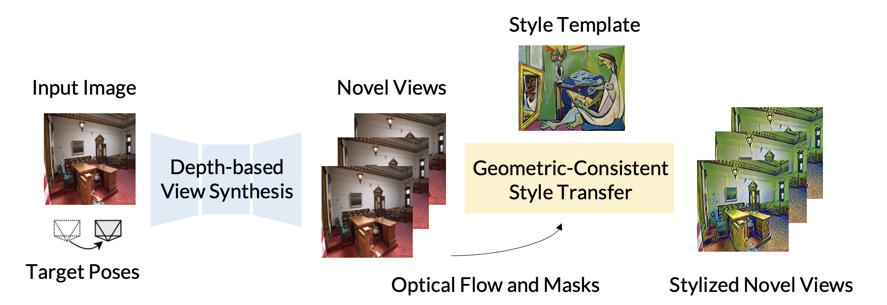
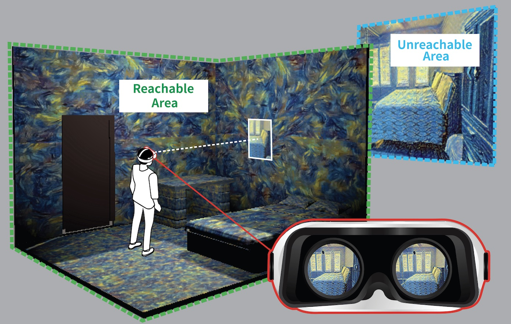

Artistic Style Novel View Synthesis
Based on A Single Image
CVPR 2022 Workshop
{kind=link}
Method Overview

ArtNV is a two-stage approach: a view synthesis stage followed by style transfer. Before neural style transfer, we perform occlusion-aware dense matching with optical flow to improve spatial consistency.
VR Application

We model unreachable regions in VR using stylized novel view synthesis as an alternative to full 3D models or 360 images. Users can view a stereoscopic pair synthesized from monocular input. See the related poster paper here.
Citation
If you find our paper or code helpful, please cite:
@InProceedings{Tseng_2022_CVPRW,
author = {Tseng, Kuan-Wei and Lee, Yao-Chih and Chen, Chu-Song},
title = {Artistic Style Novel View Synthesis Based on A Single Image},
booktitle = {Proceedings of the IEEE/CVF Conference on Computer Vision and Pattern Recognition (CVPR) Workshops},
month = {June},
year = {2022},
}For VR application, please cite:
@InProceedings{Tseng_2022_SIGGRAPH,
author = {Tseng, Kuan-Wei and Huang, Jing-Yuan and Chen, Yang-Sheng and Chen, Chu-Song and Hung, Yi-Ping},
title = {Pseudo-3D Scene Modeling for Virtual Reality Using Stylized Novel View Synthesis},
booktitle = {ACM SIGGRAPH 2022 Posters},
month = {July},
year = {2022},
}